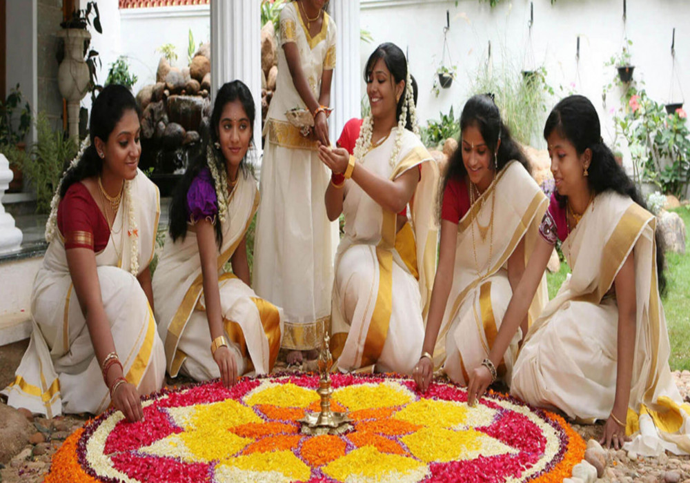

Welcome to Andhra Pradesh!

Andhra Pradesh, located in southeastern India, is known for its rich cultural heritage, historical significance,
and natural beauty. The culture of Andhra Pradesh is a vibrant tapestry of classical arts, diverse traditions, and
festive celebrations that reflect the state's historical depth and communal harmony.
Festivals play a crucial role in the cultural life of Andhra Pradesh. Sankranti, the harvest festival, is
celebrated with grandeur, featuring traditional dances, kite flying, and special dishes. Ugadi marks the Telugu
New Year and is observed with rituals, feasting, and cultural performances. The state also celebrates significant
religious festivals like Dasara, Diwali, and Vinayaka Chavithi with enthusiasm, highlighting its religious
diversity and cultural vibrancy.
Andhra cuisine is renowned for its spicy flavors and diverse dishes. Rice is a staple, often accompanied by a
variety of chutneys, pickles, and curries. Popular dishes include Pulihora (tamarind rice), Andhra Chepala Pulusu
(fish curry), and Gongura Pachadi (sorrel leaves chutney). The cuisine also boasts delicious sweets like
Pootharekulu (paper-thin sweet) and Bobbatlu (sweet flatbreads), reflecting the state’s culinary richness.
Music and dance are integral to Andhra Pradesh's cultural expression. Kuchipudi, a classical dance form
originating from the village of Kuchipudi, is renowned for its graceful movements and expressive storytelling. The
state also has a rich tradition of Carnatic music, with notable composers like Tyagaraja contributing to its
classical heritage. Folk dances such as Dhimsa and Kolattam are performed during festivals and social gatherings,
showcasing the state's diverse cultural traditions.
Andhra Pradesh's architectural heritage is a testament to its historical significance. The state is home to
magnificent temples like the Venkateswara Temple in Tirupati, known for its spiritual importance and architectural
splendor. The Lepakshi Temple, with its stunning frescoes and intricate carvings, and the ancient Buddhist sites
at Amaravati and Nagarjunakonda highlight the region’s rich historical and religious heritage. These landmarks
attract tourists and pilgrims from around the world.
The state's handicrafts are celebrated for their craftsmanship and artistic excellence. Kalamkari, a traditional
form of hand-painted or block-printed cotton textile, and Kondapalli toys, crafted from softwood and painted in
vibrant colors, are notable examples. Handloom weaving, especially the production of Pochampally and Venkatagiri
sarees, showcases the region's textile heritage and the skill of its artisans.